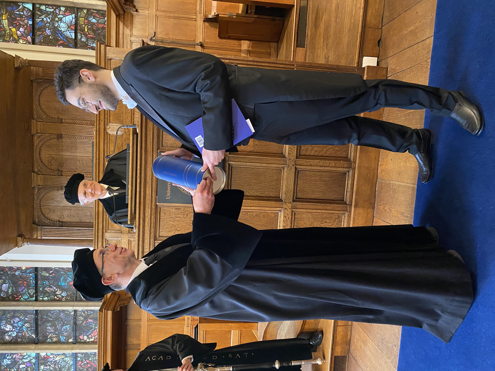
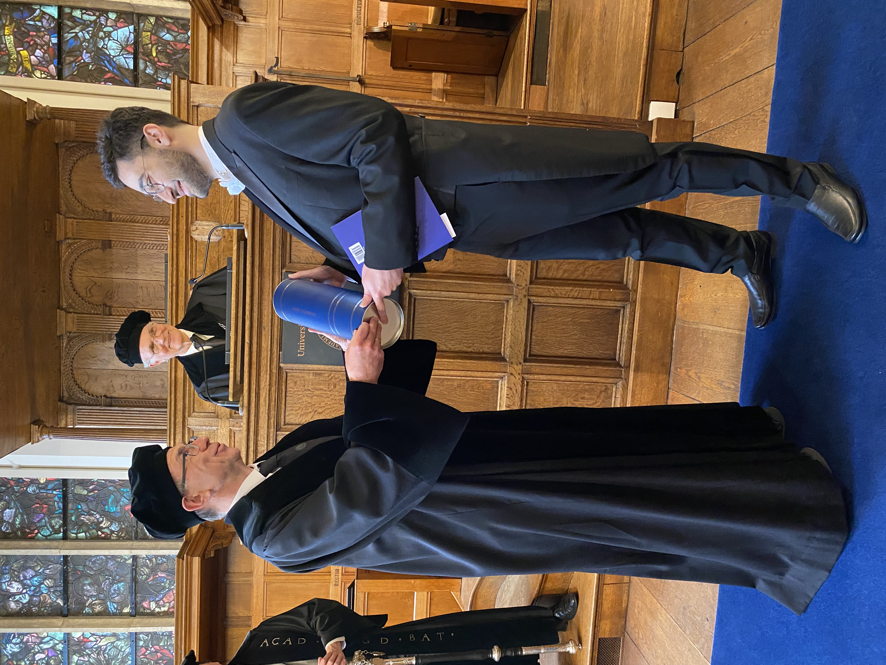
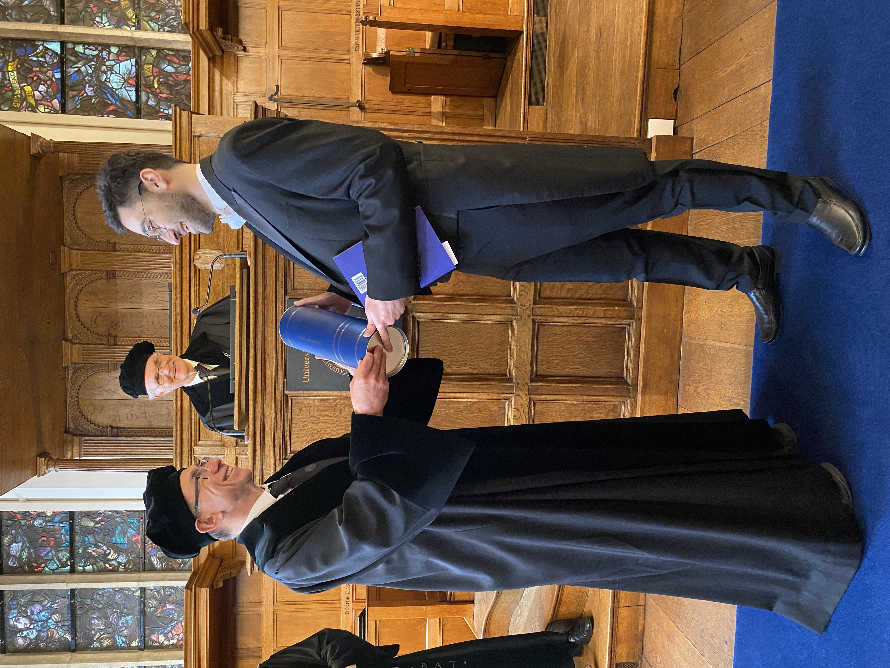
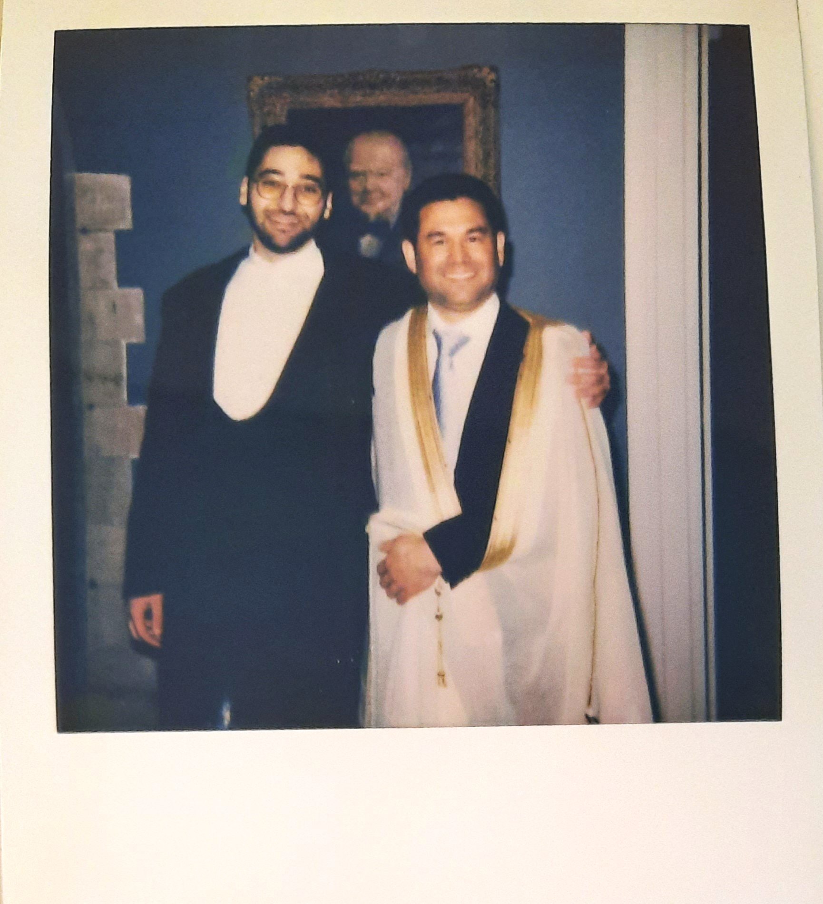
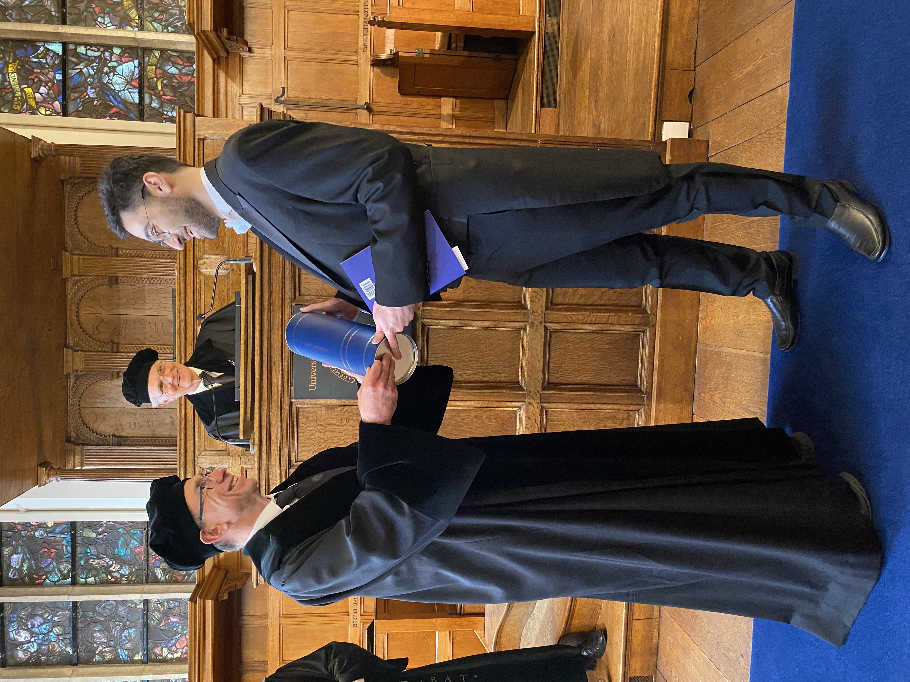
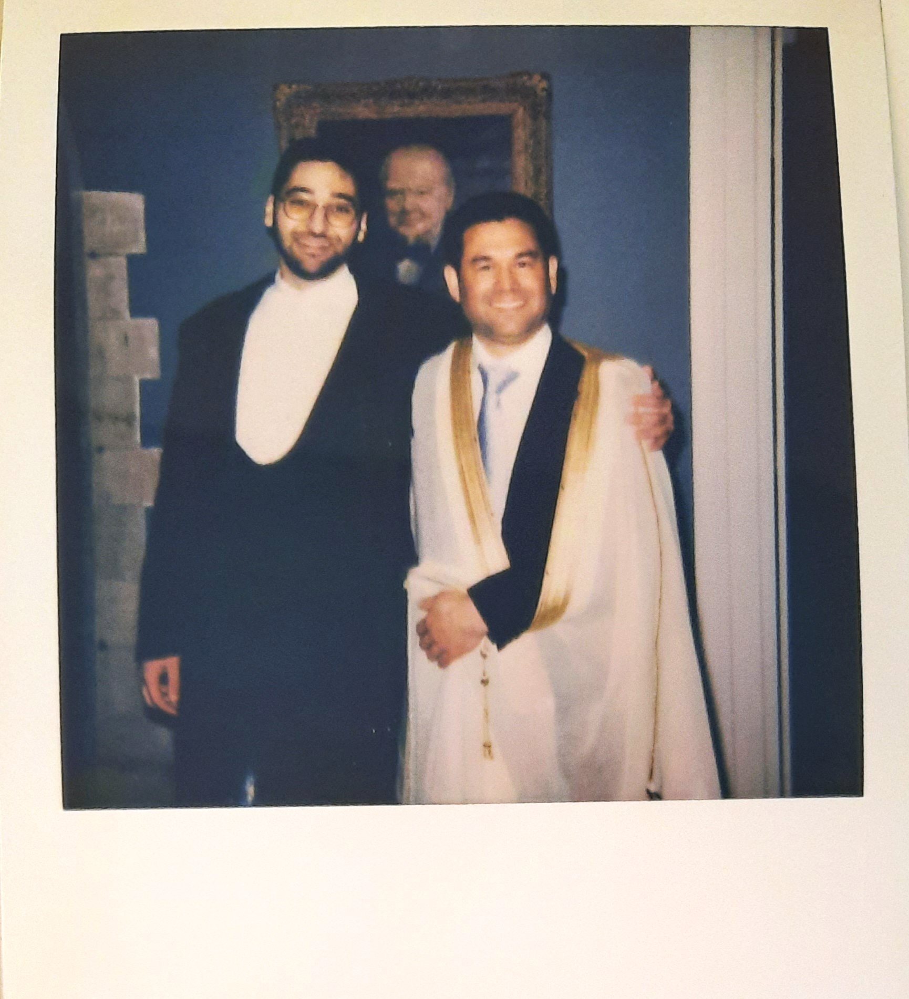
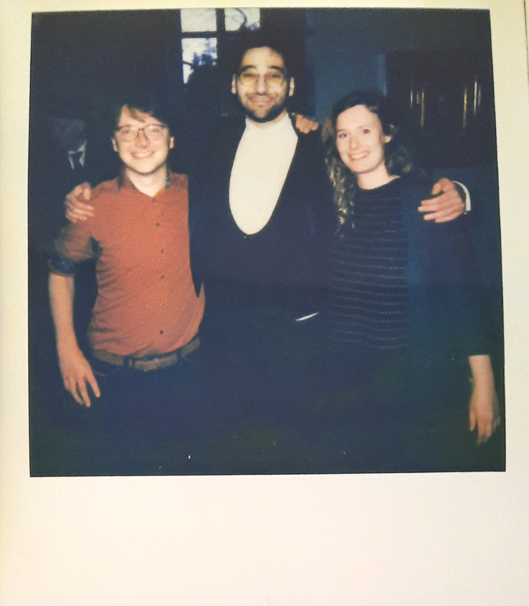
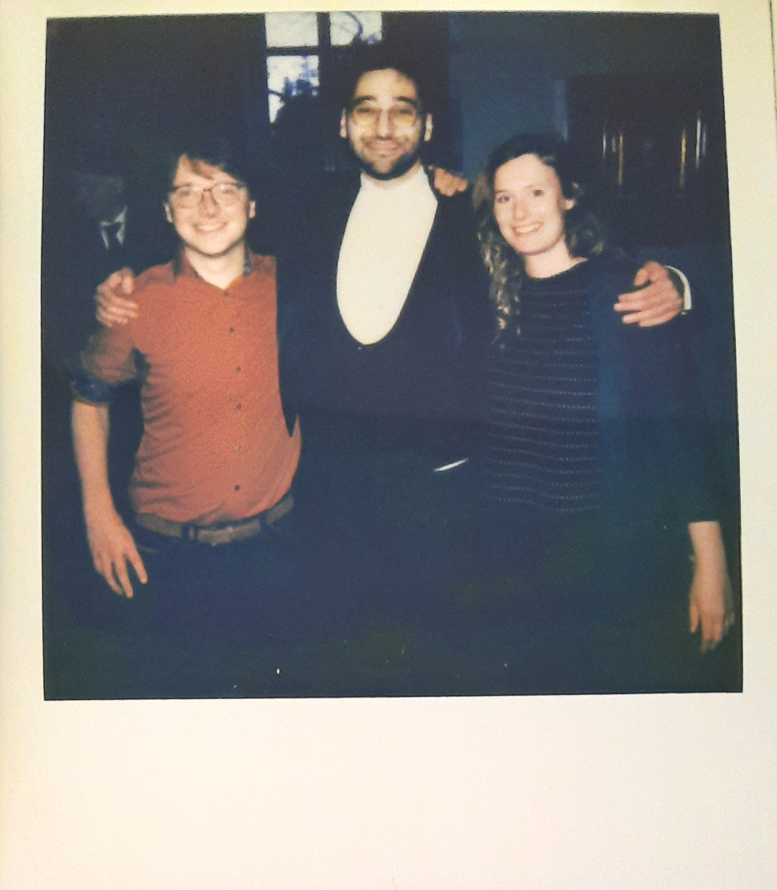

This dissertation was the accumulation of work during my PhD period in the Leiden University Medical Center, from August 2018 to March 2023. This would not have been possible without the impeccable supervision and guidance of Prof.dr.ir. J.A.P. Willems van Dijk, Dr. A. van Hylckama Vlieg, and Dr. D.O. Mook-Kanamori.
Metabolomics, proteomics, and genomics analyses provide profound insight into human biology and disease pathophysiology. In this thesis, we explored the methodological challenges facing these OMICs technologies and illustrated their applications in epidemiological studies. In part one, we focused on some of the methodological challenges facing OMICs research. These challenges included handling missing data in metabolomics, measurement agreement between high throughput proteomic measurements with standard clinical measurements, and challenges in developing prediction models using metabolomic data. The second part of this thesis addressed various epidemiological research questions by utilizing genomic data and metabolomics measurements (Metabolon and Nightingale platforms) and using advanced data analysis methods. These studies provided important insights into the associations between metabolites and hepatic triglyceride content, the associations of between the size of cytosine-adenine-guanine nucleotide repeats in the huntingtin gene with metabolomic profile, and the associations of the man-made per- and polyfluoroalkyl substances (PFAS) with metabolite levels.
توفر علوم تحليل منتجات الأيض ( الميتابولوميكس ) وتحليل البروتينات ( البروتيوميكس ) و تحليل الجينات (الجينومكس ) رؤى عميقة في علم الأحياء البشري وعلم وظائف الأعضاء المتعلقة بالأمراض وأسبابها في الفيزيولوجيا المرضية البيولوجية (Pathophysiology) على نطاق غير مسبوق. وقد استكشفنا في هذه الأطروحة التحديات البحثية التي تواجه تطبيق تقنيات الـ OMICs (أوميكس) بنظرة تكاملية عميقة وأوضحنا تطبيقاتها العملية في الدراسات الوبائية (Epidemiological Studies).
You can read the full PhD disseration here or on the Leiden Univeristy Scholarly Publications webpage following this
persistent URL
https://hdl.handle.net/1887/3589838
On the 28th of March 2023, I defended my doctoral dissertation in the Leiden University Academy building

 



 



 


I would like to express my deepest gratitude to my parents for their unwavering love, support,
and encouragement throughout my life and academic journey. Their love and belief in me have
been, and always will be, a constant source of inspiration and motivation. I also thank my sister
Dr. Nada Faquih for her support and for assisting in translating the summary of findings of this
thesis to Arabic.
I am also deeply grateful to my supervisors: My promotor Prof.dr. Ko Willemas van Dijk taught
me valuable lessons on conducting research and writing scientific papers. He was always there
for me and made time to aid in any matter I had, big or small; My co-supervisor Dr. Dennis O.
Mook-Kanamori was my first contact for this PhD position. Without him I would have never
had this life changing opportunity. He provided me the guidance and the creative freedoms to
progressively become an independent epidemiological researcher; My co-supervisor Dr. Astid
van Hylckama Vlieg for her supervision, support and her invaluable guidance and epidemiological
knowledge. In these past 4 years I have learned so much from them about epidemiology,
“OMICs” and conducting scientific research. Their expertise, dedication, support and kindness
have been instrumental in the completion of this PhD thesis. I can truly say, thanks to them, I
have transformed to a real epidemiologist and found my true calling for research. They are the
best supervisors I could have asked for.
I would like to extend my thanks to the members of the Clinical Epidemiology department for
their support and assistance throughout my studies. I want to particularly thank Dr. Ruifang
Li-Gao for her feedback and suggestions, Prof.dr.Saskia le Cessie for always sparing the time to
provide her insightful statistical knowledge, Dr. Renée de Mutsert for her support and input for
all my NEO study related projects. Special thanks to Yvonne Souverein for her help in all organizational
matters and Ingeborg de Jonge for providing the necessary NEO data for my projects. I also
want to thank Prof.dr.Olaf Dekkers, Dr. Raymond Noordam, Dr. Jan van Klinken, Dr. Maarten van
Smeden, Dr. Jelle Goeman for sharing their expertise that aided the completion of my projects.
Finally, I want to extend a special thanks to all my colleagues in the past four years for their
encouragement and friendship. Not only were valuable colleagues, they were true friends. I am
grateful for the memories we have shared together and the valuable lessons that I have learned
from them.
This dissertation would not have been possible without the support of all of you. Thank you from the bottom of my heart.